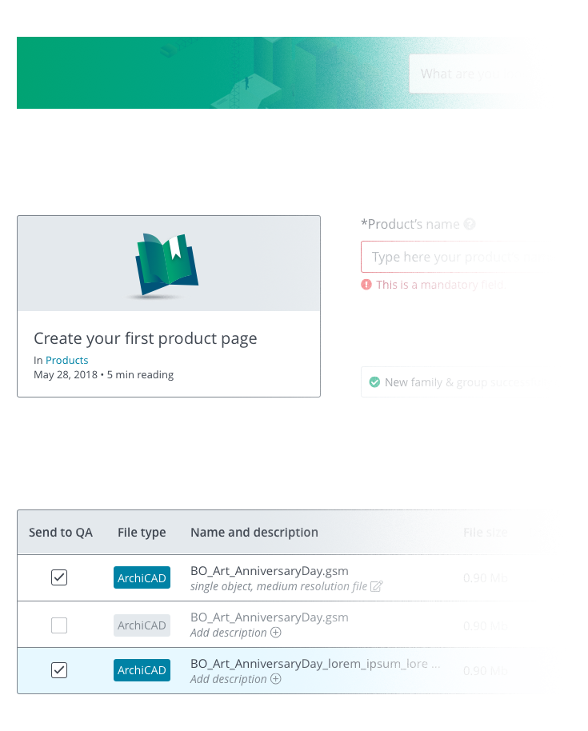

Design System
One of the main tasks I received when I started working for BIMobject was to improve the structure, efficiency, and consistency when creating and reusing the company's design. To reach that goal, I start the process of creating a Design System that would work as a living organism.

Design System definition
A design system is a series of components that can be reused in different combinations. It allows designers to built in scale through different products and solutions within the same company.The goal
As a team, we defined three mains goals:1. Promote consistency across the brand allowing us to create a unified experience across all touch points with BIMobject.
2. Improve the efficiency of development by ensuring we’re speaking the same language. It allows our conversations to be shaped less around low-level design, and more around what really matters.
3. Have a site in which developers and new employees can easily extract all the design and solutions information they need.
My role
Among the other designers on the Product department, I had to create components that would follow UX principles and correspond to the company's brand identity, vision, and mission.
Design Inventory
When I first started at BIMobject I saw that we had more than 10 websites/products. Each of them had different components with no structure. I knew a lot of users could get confused about where they were because of that.To be able to visualise and analyse all the different designs we had, I decided to do a Design Inventory.
With that, I found out that we were using 2 different blue colors as our main BIMobject color, 24 different CTAs, 7 font types, 4 different icon styles, 10 headers and 3 footers, among other things.
Another discovery made when analysing the brand colors was that the original BIMobject blue (#00AEFF) was not following accessibility checklists. Most of the areas had the BIMobject blue as a background with white or black the content.
Research
Since we had a big number of websites and many complex products we decided to take a look into companies that had the same issue. The questions we made were: How those companies where differentiating their products made for different users? How were they keeping the consistency even though they had too many websites? How were they making clear for the user that they were in a regular website and on a product's website?Some cool inspirations we found were: Adobe, Atlassian, and BIM&CO (one of our competitors) Atlassian was the one with the best solutions.
Recreating the color structure
An important aspect of the company was that we had two main different types of users going through the products: end-users (those who would go to the portal to download a BIM object) and manufactures (companies who would use BIMobject to add their BIM object files on the portal).Due to those discoveries and because I knew we could explore a lot since we didn't have concrete components, I decided to create new variations to the main colors and add complementary colors that could be used for different situations (such as to differentiate the products to specific users, feedback messages and illustrations). Next you can see the final colors I ended up with:
New components
After this, I started creating general components that I knew would be used through the websites/products (such as primary and secondary button, form types, font paragraph specification, and modals using the new feedback colors).
This same problem was happening with the footers so the solution ended up being the same.
Final thoughts
It has been an enormous challenge creating the design system. What we achieve so far is a huge Zeplin library, the next step is to have all the components together on a live website in which marketing, developers, and other employees can download and reuse the components.This is and will always be an ongoing project, we still face a lot of challenges in the design department. Since we are now four people creating and utilizing the components we need to always have a clear communication. It's not something always easy to do, but it's amazing to see how much progress we made in creating a consistent design inside the company.
You can check some of those components applied on the Academy website.